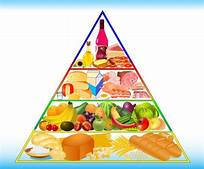
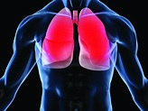

Especialistas compartilhando as melhores práticas para você e sua família:

Alimentação Saudável
Cada porção da pirâmide representa um grupo de alimentos e a quantidade recomendada diariamente.
A pirâmide atual brasileira foi proposta com base em uma dieta de 2000 Kcal, e os alimentos foram divididos em oito grupos. Para cada um desses grupos, foram estabelecidos os números de porções diárias recomendadas para uma alimentação mais saudável: Veja os oito grupos alimentares e os números de porções recomendados:
Arroz, pão, massa, batata, mandioca: 6 porções = 900 kcal
Legumes e verduras: 3 porções = 45 kcal
Frutas: 3 porções = 210 kcal
Carnes e ovos: 1 porção = 190 kcal.
Leite, queijo e iogurte: 3 porções = 360 kcal
Feijões: 1 porção = 55 kcal
Óleos e gorduras: 1 porção = 73 kcal
Açúcares e doces: 1 porção =110 kcal

Exercícios Respiratórios
Faça exercício respiratório todos os dias, os exercícios fortalecem musculatura respiratória
Exercícios respiratórios que podem ser feitos em casa. Exercite a respiração normal, inspire pelo nariz uma vez e expire pela boca uma vez. Faça três séries de dez repetições, duas vezes ao dia, com intervalo de um minuto entre as séries;
Puxe o ar duas vezes pelo nariz sequencialmente, e solte-o pela boca da mesma forma. Faça duas séries de dez repetições, com intervalo de um minuto entre elas, de manhã e de noite.
Como solucionar os problemas psicológicos
Veja a historia de pessoas que superaram os problemas psicológicos ocasionados na POS Pandemia
As mulheres sofreram mais psicologicamente do que os homens. Pacientes com diagnóstico psiquiátrico prévio também corriam maior risco de apresentar transtornos do que aqueles sem histórico de transtormental. De acordo com os pesquisadores, os efeitos psiquiátricos podem ser causados ”pela resposta imunológica ao próprio vírus, ou por estressores psicológicos, como isolamento social, impacto psicsocial, impacto psicológico de uma nova doença grave e potencialmente fatal, preocupações sobre infectar outras pessoas e estigma.